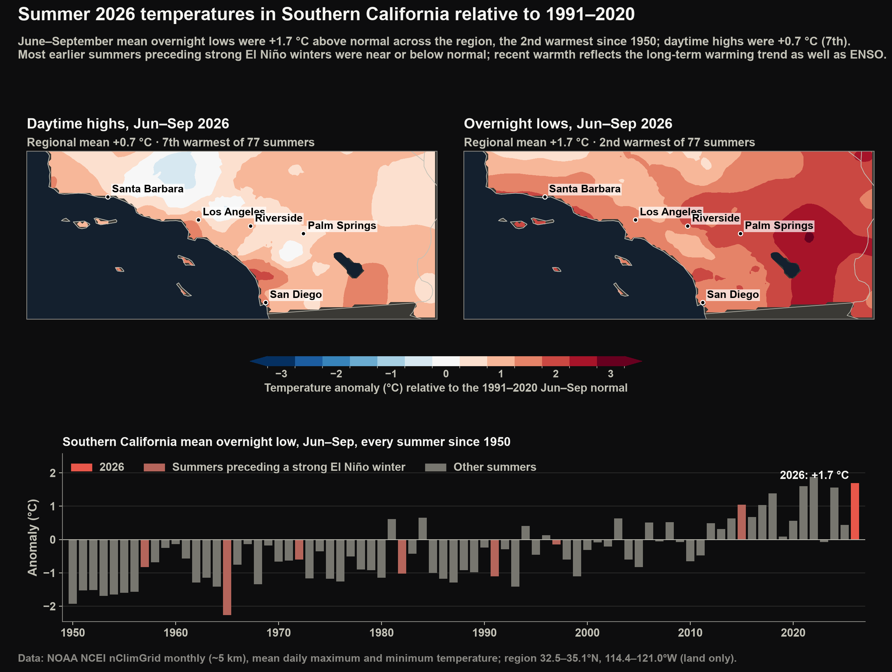
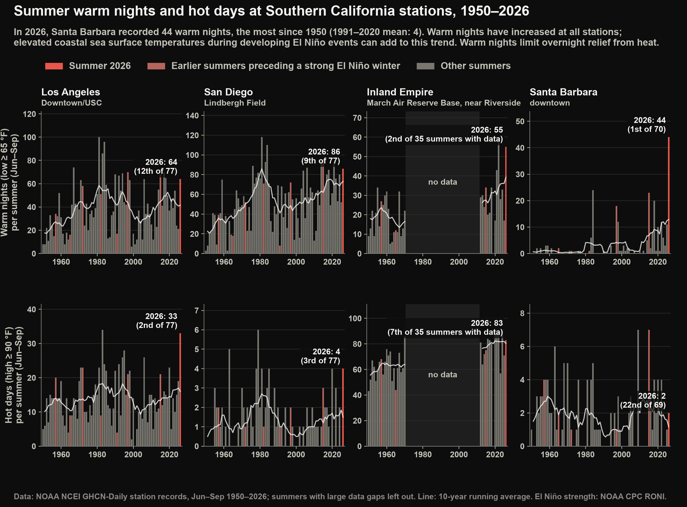
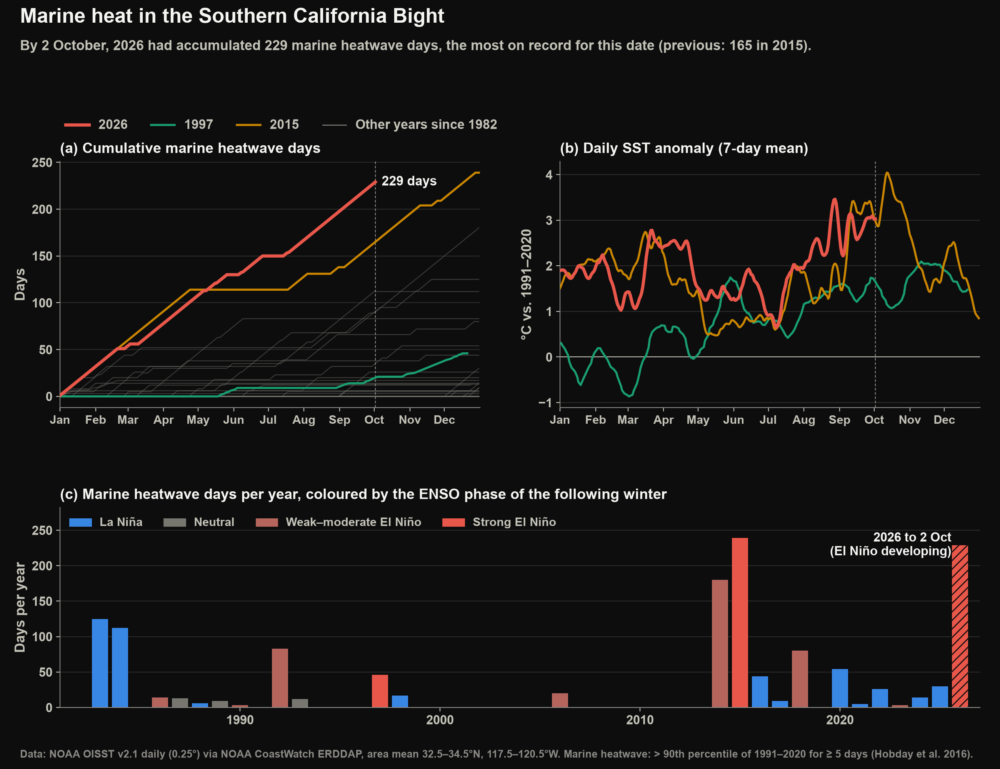
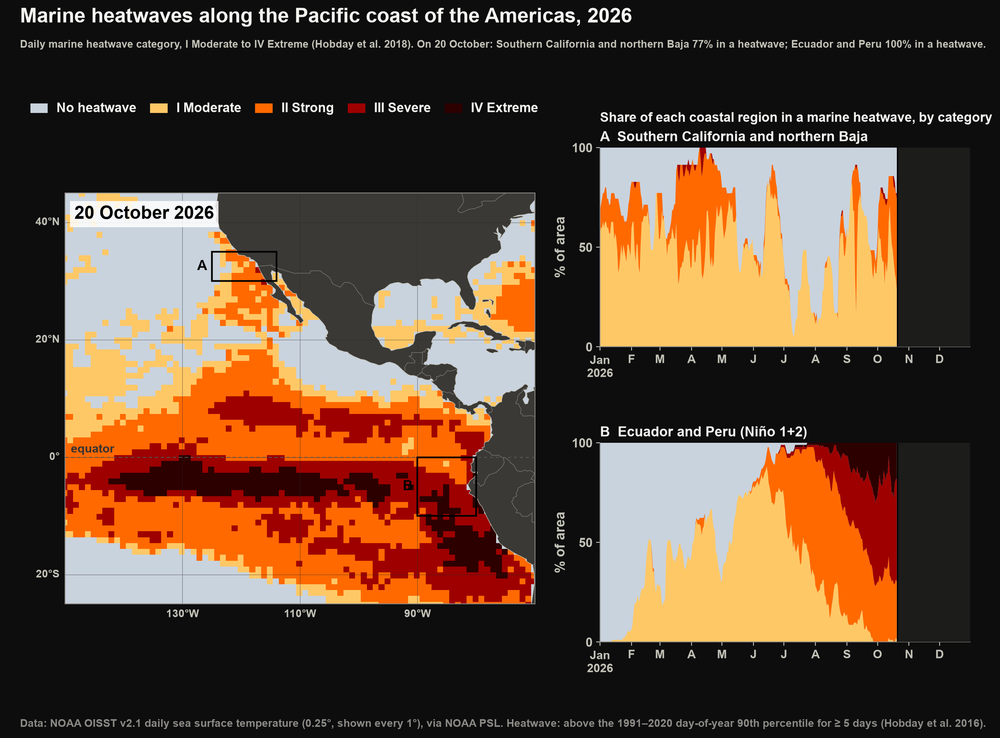
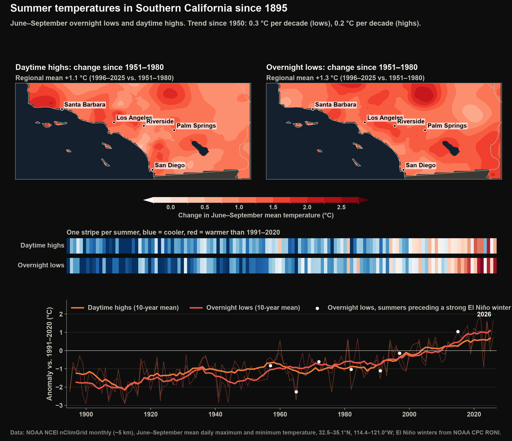

Southern California Heat
Southern California heat
How the summer of 2026 compared with past summers across Southern California, on land and in coastal waters, and how summer heat in the region has increased since 1895.
Summer 2026 nights were among the warmest on record across the region; daytime highs were less exceptional.

- What it shows
- June–September 2026 daytime-high and overnight-low anomalies (Differences from normal (the 1991–2020 average) for the same time of year.) across Southern California (NOAA nClimGrid (NOAA's gridded (about 5 km) monthly temperature and precipitation for the United States since 1895.), ~5 km), and the regional overnight-low anomaly for every summer since 1950.
- How it relates to El Niño
- El Niño (A periodic warming of the central and eastern equatorial Pacific Ocean, with related changes in winds and rainfall, recurring every two to seven years.)'s main influence on Southern California comes in winter. This summer's heat coincided with the developing event and record-warm coastal water, so these maps put summer 2026 in context.
- Data
- NOAA NCEI nClimGrid monthly (~5 km) mean daily maximum and minimum temperature, June–September, land only; anomalies from 1991–2020.
- Get the data
- nClimGrid monthly (NOAA NCEI)
Download: Figure as shown (PNG) · Clean figure, no title (PNG)


Warm nights were far more frequent than usual in summer 2026 at every station, and Santa Barbara set a record.

- What it shows
- Station counts of warm nights (≥ 65 °F) and hot days (≥ 90 °F) each summer since 1950 at Los Angeles, San Diego, the Inland Empire and Santa Barbara.
- How it relates to El Niño
- Warm coastal water keeps nights warmer near the coast, and El Niño years can bring warm water to Southern California; the station records show how this summer compares with past El Niño and other years.
- Data
- NOAA NCEI GHCN-Daily station records (Los Angeles, San Diego, Inland Empire, Santa Barbara), June–September; El Niño strength from NOAA CPC RONI.
- Get the data
- GHCN-Daily stations (NOAA NCEI) · Relative Oceanic Niño Index (NOAA CPC)
Download: Figure as shown (PNG) · Clean figure, no title (PNG)


Coastal waters off Southern California have had more marine heatwave (A spell of at least five days when sea surface temperature is above the 90th percentile for the time of year (Hobday et al., 2016).) days in 2026 than in any previous year by the same date.

- What it shows
- Daily sea surface temperature and marine heatwave days in the Southern California Bight since 1982 (NOAA OISST (NOAA's Optimum Interpolation Sea Surface Temperature: a daily 0.25° analysis of satellite, ship and buoy data since 1981.)), with 2026 compared with 1997 and 2015.
- How it relates to El Niño
- El Niño can warm the waters off California, through ocean waves travelling up the coast and changes in the winds. Marine heatwaves affect fisheries, kelp forests and coastal temperatures.
- Data
- NOAA OISST v2.1 daily sea surface temperature (0.25°), via NOAA CoastWatch ERDDAP, averaged over the Southern California Bight; marine heatwaves after Hobday et al. (2016).
- Get the data
- OISST v2.1 daily (NOAA CoastWatch ERDDAP)
Download: Figure as shown (PNG) · Clean figure, no title (PNG)


How to read this figure
A marine heatwave day is part of a spell of at least five days when the water is warmer than 90% of past values for that time of year. Each year is compared through the same calendar date.
On 20 October 2026 the whole coastal ocean off Ecuador and Peru was in a marine heatwave, 70% of it Severe or Extreme, and half the coastal waters off Southern California and northern Baja were in a Strong or Severe heatwave.

- What it shows
- Daily marine heatwave category (I Moderate to IV Extreme) across the eastern Pacific from 25°S to 45°N since January 2026 (NOAA OISST), with the share of the coastal waters off Southern California and off Ecuador and Peru in each category.
- How it relates to El Niño
- El Niño warms the coastal ocean of the Americas through coastal Kelvin waves (Pulses of warm water that travel east along the equator beneath the surface, crossing the Pacific in about two months.) and weaker winds. Prolonged marine heatwaves stress fisheries, kelp forests and coral, and can bring toxic algal blooms and unusual marine species to Southern California.
- Data
- NOAA OISST v2.1 daily sea surface temperature (0.25°, used every 1°), via NOAA PSL; marine heatwaves and categories after Hobday et al. (2016, 2018), with a 1991–2020 baseline.
- Get the data
- OISST v2.1 daily (NOAA PSL)
Open the animation in a new tab · still image of the final frame
Download: Figure as shown (PNG) · Clean figure, no title (PNG) · Video (MP4) · 1 MB


How to read this figure
Colours show the category of marine heatwave on each day: the more times the water exceeds its usual range for that time of year, the higher the category. Light grey-blue is ocean with no heatwave. The charts on the right show how much of each coastal box (A and B on the map) was in each category as the year went on.
Summer nights across Southern California have warmed more than summer days since the mid-20th century.

- What it shows
- Change in summer daytime highs and overnight lows since 1951–1980 across Southern California, and the regional summer temperature record since 1895 (NOAA nClimGrid).
- How it relates to El Niño
- Long-term warming sets the baseline: any heat related to El Niño now comes on top of summers that are already warmer than in the past.
- Data
- NOAA NCEI nClimGrid monthly (~5 km) June–September mean daily maximum and minimum temperature since 1895; El Niño winters from NOAA CPC RONI.
- Get the data
- nClimGrid monthly (NOAA NCEI) · Relative Oceanic Niño Index (NOAA CPC)
Download: Figure as shown (PNG) · Clean figure, no title (PNG)


El Niño and wildfire
The influence of El Niño on Southern California wildfire is indirect. Above-normal winter precipitation typically reduces fire activity during the wet season but increases the growth of grasses and fine fuels, which cure during the following summer and autumn and can elevate the potential for rapidly spreading grass fires. There is no robust relationship between ENSO and Santa Ana wind events, which drive the largest autumn fires. Fire danger on a given day depends on wind, humidity and fuel moisture; official fire-weather products should be used for decisions.
Official forecasts and warnings
- Day-to-day weather, heat and Red Flag (fire weather) warnings: NWS Los Angeles/Oxnard · NWS San Diego
- Wildfire outlooks for Southern California: Predictive Services, South Ops
- Active fires and evacuations: CAL FIRE incidents
- Heat safety: National Weather Service